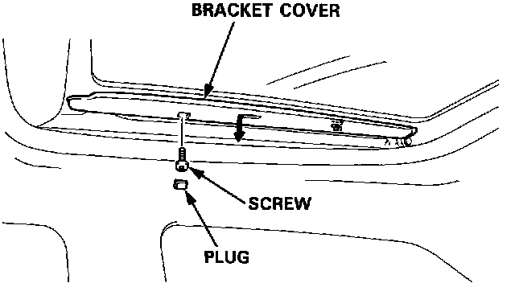
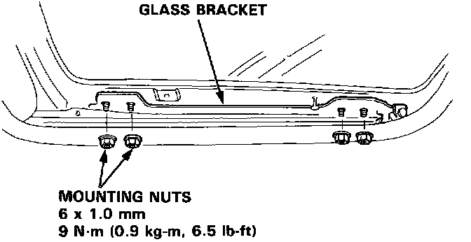
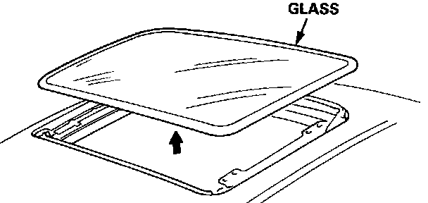

Glass Replacement
Glass Replacement1. Close the glass fully.
2. Slide the sunshade all the way back.

3. Pry plug out of each bracket cover, remove the screw, and slide the bracket cover off to the rear.

4. Remove the mounting nuts from the glass brackets on both sides.

5. Remove the glass by lifting up and pulling forward as shown.
NOTE: Do not damage the roof panel.
6. Install the glass in the reverse order of removal.
7. Check for water leaks.
NOTE: Do not use high pressure water.